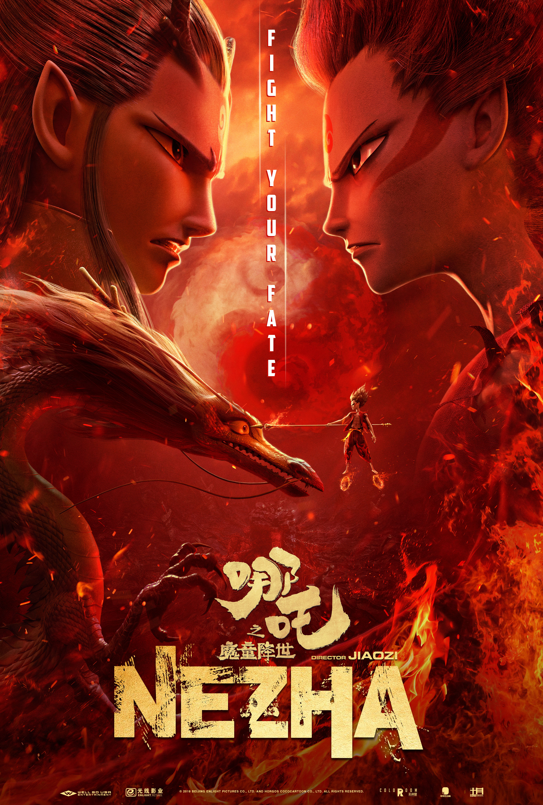

Ne Zha
About Ne Zha
The Primus extracts a Mixed Yuan Bead into a spirit bead and a demon bead. The spirit bead can be reincarnated in human to help King Zhou establish a new dynasty, the demon bead will create a devil and harm human. Ne Zha is the one who should be spirit bead hero but he becomes a devil incarnate, because the spirit bead and the demon bead is switched.

Ne Zha and his friends
The poster is Ne Zha and his friends